Accès et configuration : renseignez-vous auprès de votre établissement, de votre équipe de recherche ou de votre service informatique pour les serveurs, les licences, la sécurité des données et les droits d’accès. Vérifiez les paramètres des logiciels et les consignes applicables à votre protocole.
1. Programmer l’expérience
a) Avec OpenSesame
Préparer
- Coder et tester l’expérience avec exécution web (Experiment > Exécuter l’expérience > In a browser with OSWeb (osweb)).
- Certains éléments disponibles en exécution classique (PsychoPy) ne seront pas utilisables, mais d’autres, comme les
inline_scriptsen JavaScript et HTML seront utilisables (et bien pratiques). Il est donc préférable de sélectionner ce paramètre dès le début pour éviter la perte de certaines fonctionnalités une fois l’expérience créée.
- On peut, par exemple, utiliser les
inline_scriptpour collecter les données démographiques des participant·es, que certaines plateformes recueillent partiellement ou de manière imparfaite.
- Par exemple, Prolific recueille par défaut l’âge, le sexe (mais pas le genre), le pays de naissance et de résidence, la langue, et le statut de travail (mi-temps ou temps plein). La collecte de l’ethnie est imprécise, et il manque des informations comme le genre, le niveau d’étude ou la catégorie socio-professionnelle. Si un échantillonnage (depuis la plateforme) basé sur des critères démographiques est nécessaire (détails ici), ces données seront disponibles en téléchargement.
- De plus en plus de revues exigent une description précise des participant·es, notamment concernant le genre et l’ethnie, que les données de Prolific ne fournissent pas toujours. Dans ce cas, il est possible de créer un formulaire personnalisé en HTML.
- Attention : certaines informations, comme la date de naissance, ne peuvent être demandées sur Prolific (détails ici).
- NB :
- Genre : sexe et genre sont souvent confondus. Le sexe est généralement traité comme binaire, négligeant ainsi les personnes intersexes. En ce qui concerne l’identité de genre, les personnes non binaires, genderfluid, agenre, plurigenre peuvent utiliser différents termes. Pour des catégories inclusives mais concises, on peut, en plus des catégories femme et homme, utiliser “genderqueer” (ou ”gender queer” utilisé, comme le premier en français) pour inclure les personnes non binaires, (gender / genre) fluides, ou agenres (détail à propos du genre ici).
- Ethnicity/Race : là aussi, les catégories peuvent être imprécises. Même l’American Psychological Association (APA) et le gouvernement américain n’ont pas de consensus clair.
- Voir l’annexe de Ward et collègues (2018) pour des questions détaillées concernant de nombreuses caractéristiques démographiques, comme l’ethnie, le revenu, le statut professionnel, ou encore les croyances religieuses.
- On peut récupérer l’identifiant Prolific (voir section 3. a) à ce propos) automatiquement, mais le demander permet un double contrôle.
- Chaque variable demandée dans le formulaire HTML doit bien sûr être ajoutée au logger pour être enregistrée.
- Code
<h4>Prolific ID</h4> <p>Your Prolific ID: <input type="text" name="prolific_ID" required/></p> <h4>Sex</h4> <label> <input type="radio" name="sex" value="female" required/>Female </label> <label> <input type="radio" name="sex" value="male"/>Male </label> <label> <input type="radio" name="sex" value="intersex"/>Intersex </label> <h4>Gender</h4> <label> <input type="radio" name="gender" value="woman"/>Woman </label> <label> <input type="radio" name="gender" value="man"/>Man </label> <label> <input type="radio" name="gender" value="genderqueer"/>Genderqueer </label> <h4>Race</h4> <label> <input type="radio" name="race" value="asian"/>Asian </label> <label> <input type="radio" name="race" value="black"/>Black or African American </label> <label> <input type="radio" name="race" value="hispanic"/>Hispanic or Latino </label> <label> <input type="radio" name="race" value="middleeast"/>Middle Eastern or North African </label> <label> <input type="radio" name="race" value="native"/>Native American or Alaska Native </label> <label> <input type="radio" name="race" value="islander"/>Native Hawaiian or Pacific Islander </label> <label> <input type="radio" name="race" value="white"/>White </label> <label> <input type="radio" name="race" value="mixed"/>Mixed / Multiracial </label> <label> <input type="radio" name="race" value="other"/>Other </label> <h4>Age</h4> <input type="number" name="age" min="18" max="99" required/></p>
- Si on a besoin de répartir les participations dans plusieurs conditions, il est nécessaire d’ajouter un
inline_javascriptau début de l’expérience pour récupérer la condition (voir section 2. a) pour les stipuler, et ne pas oublier d’ajouter cette variable au logger).- Drag & Drop
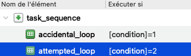
- Drag & Drop
- On peut également utiliser cette approche pour manipuler une variable d'attente (
waiting), particulièrement utile lorsque le script et les stimuli mettent du temps à se charger.- Grâce à une boucle contenant un
sketchpad(e.g. “Veuillez patienter" ou "Chargement” affiché pendant 500ms) et unrepeat_cycle(en utilisant Répéter si[waiting]=1), on peut signaler au·à la participant·e que le chargement de l'expérience est en cours.- Drag & Drop
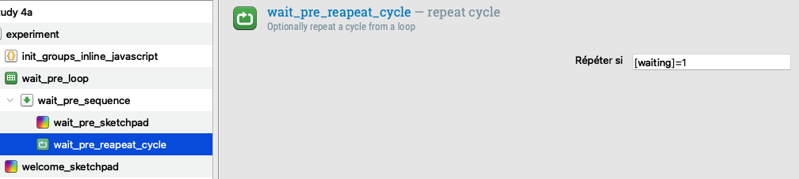
- Code
function getCondition() { console.log('getting pending conditions') vars.waiting = 1 let condition = jatos.batchSession.find('/pending/0') vars.condition = condition if (typeof condition === "undefined") { vars.experiment_finished = 1 vars.waiting = 0 } else { vars.experiment_finished = 0 jatos.batchSession.move('/pending/0', '/started/0') .then(() => { console.log('starting with condition ' + condition) vars.condition = condition vars.waiting = 0 }) .catch(() => { console.log('failed to start condition') vars.condition = null setTimeout(() => getCondition(), 1000) getCondition() }) } } if (window.jatos) { console.log('Jatos Detected') getCondition() console.log('starting with condition ' + vars.condition) } else { vars.waiting = 0 vars.condition = 1 }
- Grâce à une boucle contenant un
- On peut également profiter de cet
inline_javascriptde début d’expérience pour récupérer les données concernant l’étude et les participant·es.- Pour Prolific, le site propose lui-même de configurer les paramètres à “passer” via l’URL. Généralement, on récupère l’identifiant du·de la participant·e, l’identifiant de l’étude et l’identifiant de session (voir section 3. a) à ce propos).
- Code
if (window.jatos && jatos.urlQueryParameters.PROLIFIC_PID) { console.log('Prolific information is available') vars.prolific_participant_id = jatos.urlQueryParameters.PROLIFIC_PID vars.prolific_study_id = jatos.urlQueryParameters.STUDY_ID vars.prolific_session_id = jatos.urlQueryParameters.SESSION_ID } else { console.log('Prolific information is not available (setting values to -1)') vars.prolific_participant_id = -1 vars.prolific_study_id = -1 vars.prolific_session_id = -1 } console.log('prolific_participant_id = ' + vars.prolific_participant_id) console.log('prolific_study_id = ' + vars.prolific_study_id) console.log('prolific_session_id = ' + vars.prolific_session_id)
- Code
- Quant à Pavlovia, on peut également passer autant de paramètres que souhaités en modifiant directement l’URL de l’étude.
- Code ici.
- Pour Prolific, le site propose lui-même de configurer les paramètres à “passer” via l’URL. Généralement, on récupère l’identifiant du·de la participant·e, l’identifiant de l’étude et l’identifiant de session (voir section 3. a) à ce propos).
- Si on souhaite présenter du texte un peu long (consignes, scénarios), l’utilisation d’un
sketchpaddevient vite pénible à mettre en forme et peut donner un rendu peu esthétique.- On peut dans ce cas utiliser un
inline_htmlet gérer le style soi-même. Par exemple, centrer le contenu et définir la police (et sa taille) dans des balisesdivetp. L’élémentinput(caché) sert de “bouton suivant” sur lequel le script cliquera automatiquement pour passer à l’écran suivant.- Code
<style> div { display: flex; justify-content: center; align-items: center; height: 100px; width: 100%; } p { font-family: 'Montserrat'; font-size: 28px; text-align: center; text-wrap: pretty; } input { visibility: hidden; } </style>
- On ajoute ensuite une fonction JavaScript pour contrôler l’affichage :
- Soit un délai précis en millisecondes (ici 6500ms) avant de passer automatiquement à la suite.
- Code
<script> var maxTime = 6500; function onTimeOut() { document.getElementById('next').click(); } setTimeout(onTimeOut, maxTime); </script>
- Code
- Soit une touche à presser pour avancer (e.g. la touche
Espace).- Code
<script> document.addEventListener('keydown', function(event) { if (event.code === 'Space') { document.getElementById('next').click(); } }); </script>
- Code
- Soit un délai précis en millisecondes (ici 6500ms) avant de passer automatiquement à la suite.
- Il ne reste plus qu’à insérer le contenu à afficher :
- Un texte brut (e.g. des consignes), suivi du bouton caché qui déclenche la suite automatiquement.
- Code
<div> <p>Voilà des consignes très très très très très longues. Vive les tricératops !<p> <input type='submit' id='next' value='' name=""> </div>
- Code
- Soit une variable récupérée dans la boucle comme elle le serait pour un sketchpad (e.g. la variable
scenario), avec le même bouton caché.- Code
<div> <p>[scenario]<p> <input type='submit' id='next' value='' name=""> </div>
- Un texte brut (e.g. des consignes), suivi du bouton caché qui déclenche la suite automatiquement.
- Ce qui donne, par exemple, quand on choisit d’afficher les consignes jusqu’à l’appui de la touche
Espace.- Code
<script> document.addEventListener('keydown', function(event) { if (event.code === 'Space') { document.getElementById('next').click(); } }); </script> <style> div { display: flex; justify-content: center; align-items: center; height: 100px; width: 100%; } p { font-family: 'Montserrat'; font-size: 28px; text-align: center; text-wrap: pretty; } input { visibility: hidden; } </style> <div> <p>Voilà des consignes très très très très très longues. Vive les tricératops !<p> <input type='submit' id='next' value='' name=""> </div>
- Code
- On peut dans ce cas utiliser un
Exporter
- Enfin, il est nécessaire d’exporter l’expérience sous forme d’archive JATOS (
.jzip) afin de la mettre en ligne (Outils > Panneau de contrôle OSWeb et JATOS > Exporter vers l’archive JATOS).
b) Avec PsychoPy
[À compléter]
2. Mettre l’expérience en ligne
a) Avec JATOS
Kesako ?
- Pour héberger l’expérience et recueillir les réponses, utilisez une instance JATOS autorisée. Renseignez-vous auprès de votre établissement, de votre équipe de recherche ou de votre service informatique pour obtenir un compte et les consignes de protection des données.
- Il existe également un serveur JATOS MindProbe sponsorisé notamment par l’ESCOP (European Scientific Cooperative on Phytotherapy) sur lequel on peut créer un compte ou se connecter avec son identifiant ORCID. Il permet d’y effectuer des tests sans compte sur le serveur du laboratoire.
Importer une étude
- Pour importer l’archive JATOS
.jzip, il suffit de cliquer sur Import Study. On pourra ensuite modifier le nom de l’expérience dans Properties > Title.- Boutons
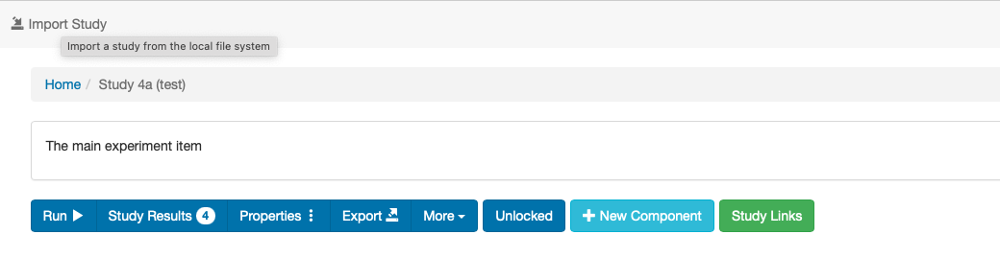
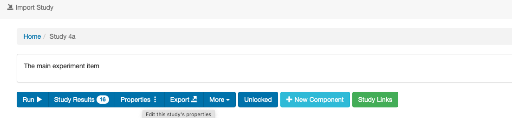
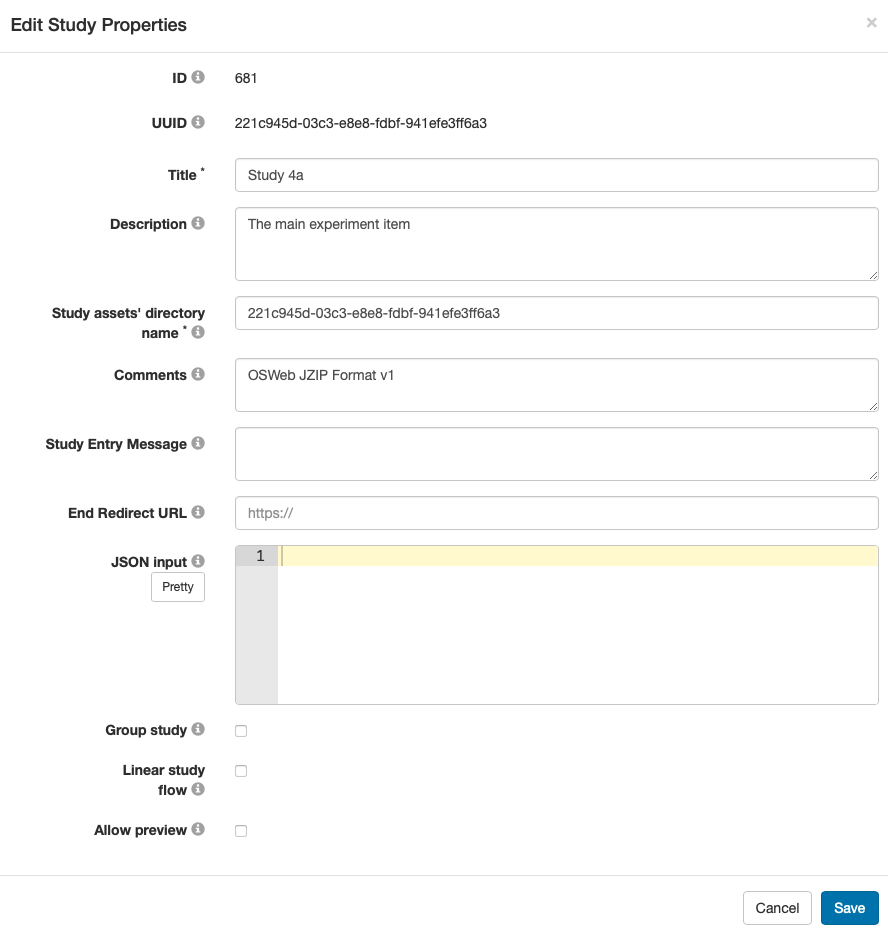
- Si des modifications sont apportées au script de l’expérience et que celle-ci est ré-importée sans réinitialiser l’identifiant UUID de l’étude (Outils > Panneau de contrôle OSWeb et JATOS > JATOS UUID > Effacer l'UUID), la nouvelle version sera intégrée dans la même expérience. L’ancienne version restera accessible mais sera désactivée (il sera toujours possible de réactiver une version antérieure et de désactiver une version plus récente).
- Boutons
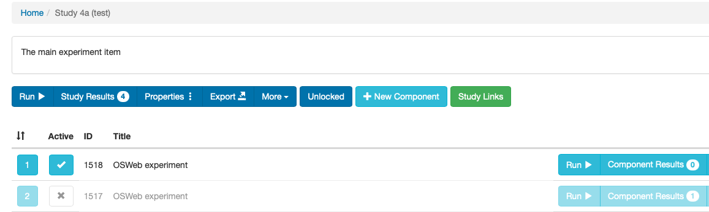
Paramétrer une étude
- Dans le cas où on manipule des conditions, il sera nécessaire de préciser comment les attribuer aux participant·es.
- Pour ce faire, il faut se rendre dans
Study Links > Batch Session Dataet y préciser ses conditions. Puisque les données de session de l’expérience sont stockées ici, il est important d’indiquer les conditions au bon endroit et d’effectuer quelques tests avant de lancer l’expérience. Cela permettra notamment d’être plus à l’aise pour effectuer des modifications après le lancement de l’expérience.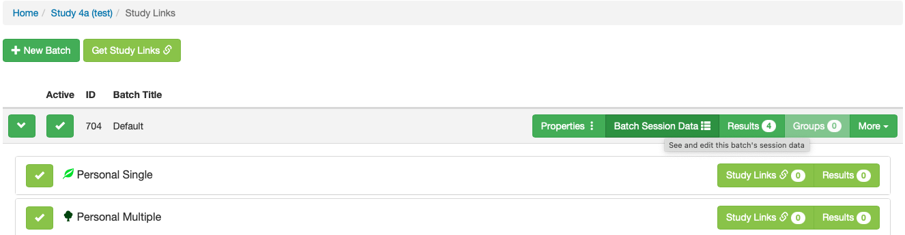
- Il existe 3 listes :
- “
pending” : pour stocker les éléments en attente d’assignation.
- “
started” : pour les éléments attribués aux participant·es en cours d'expérience.
- “
finished” : pour les éléments attribués aux participant·es ayant terminé l'expérience.
- “
- Ainsi, pour répartir les participant·es dans 2 conditions, avec 5 personnes par condition et en alternance, on écrira :
- Code
{ "pending": [ 1, 2, 1, 2, 1, 2, 1, 2, 1, 2 ], "started": [ ], "finished": [ ] }
- Code
- En revanche, pour remplir d’abord la première condition, puis la seconde, on écrira : :
- Code
{ "pending": [ 1, 1, 1, 1, 1, 2, 2, 2, 2, 2 ], "started": [ ], "finished": [ ] }
- Code
- NB :
- JATOS n’est pas sensible à l’organisation des éléments : on peut les préparer et les fournir par blocs de 10 lignes, par exemple. Il les réorganisera automatiquement en une ligne par élément.
- Il est courant que des participant·es commencent une expérience sans la terminer (en raison de bugs, de fatigue, etc.). Il est donc prudent de prévoir plus d’éléments à assigner que le nombre attendu de participant·es pour éviter que certain·es ne réalisent uniquement les parties sans conditions de lancement (i.e. toutes sauf les tâches conditionnelles) mais soient tout de même rémunéré·es.
- Si des éléments de condition doivent être ajoutés après le lancement de l’expérience, ils devront être placés dans “
pending”. Dans ce cas, il est préférable d’assigner les conditions en alternant les valeurs (e.g.1, 2, 1, 2) plutôt qu’en blocs successifs.
Partager une étude
- Pour lancer l’étude sur Prolific ou Amazon Mechanical Turk (MTurk), Pavlovia gérant l’hébergement ET la gestion des participant·es, il est nécessaire de générer un lien de partage de l’expérience depuis JATOS.
- JATOS permet de générer plusieurs liens et QR codes adaptés aux besoins. Différentes catégories de liens sont disponibles selon le nombre de participant·es ciblé·es et les autorisations de répétition de l’expérience. Les spécificités sont détaillées ici (NB : un “worker” est un·e participant·e).
- Généralement, pour réaliser des tests soi-même, il suffit de lancer l’expérience depuis JATOS, i.e. sans lien.
- Boutons
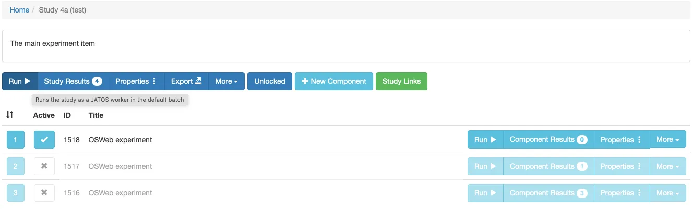
- Boutons
- Pour effectuer des tests et pilotes, on utilisera les liens personnels. Le lien simple attribue un lien unique à chaque personne et garantit que l’étude ne peut être réalisée qu’une fois par participant·e, tandis que le lien multiple permet de relancer la même étude avec le même lien.
- Pour le lancement sur Prolific (ou toute autre plateforme, y compris par e-mail ou via les réseaux sociaux), on utilise un lien général. Le choix entre un lien simple et un lien multiple dépend des besoins de l’expérience (répétition possible ou non). Notez qu'en cas de problème de chargement ou de compatibilité de navigateur, le lien multiple est souvent préférable.
- Enfin, le dernier lien MTurk, comme son nom l’indique, sert lors de l’utilisation de la plateforme Amazon Mechanical Turk.
- Attention :
- À chaque rechargement de la page (donc si l’utilisateurice rencontre des difficultés de chargement de page, autant de conditions seront mises de côté que la page sera rechargée, l’expérience redémarre et une nouvelle condition est assignée, remplaçant la précédente. Il est donc important de surveiller l’effectif total, la répartition par condition et leur équilibre dans la session Batch.
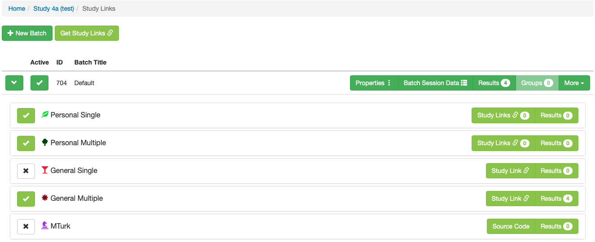
- Généralement, pour réaliser des tests soi-même, il suffit de lancer l’expérience depuis JATOS, i.e. sans lien.
b) Avec Qualtrics ou LimeSurvey
- Il est aussi possible d’intégrer directement un lien externe d’un questionnaire préparé sur une plateforme tierce :
- Qualtrics : logiciel payant (compte gratuit possible mais avec des fonctionnalités limitées), très utilisé dans la recherche en sciences sociales et présent dans de nombreuses publications anglophones.
- LimeSurvey : licence gratuite selon les licences et accès proposés par l’établissement. Pour les stagiaires, l’encadrant·e peut demander l’accès en soumettant un ticket à la DSI selon la procédure locale.
- Prolific possède également son propre créateur d’expérience, encore en version bêta et actuellement indisponible en France.
3. Lancer l’expérience en ligne
a) Prolific
- Attention :
- Prolific (du côté expérimentateurice) peut rencontrer quelques difficultés sur Safari (les pages sont souvent lentes ou impossibles à charger). Il est donc préférable de privilégier Chrome ou Firefox, tout en veillant à tester l’expérience depuis JATOS sur Safari.
Study details
- Description :
In this study, you will be presented with … for which you are required to make decisions as quickly as possible. The task has been designed to be performed on a computer and is expected to take approximately … minutes to complete.
Please be aware that a screening for random responses will be conducted, and any responses determined to be random will be excluded from the analysis.
- Device requirements :
- Sélectionner les appareils compatibles pour la réalisation de la tâche, ainsi que les accessoires nécessaires.
- Si un casque est requis, assurez-vous de l’indiquer (et de le rappeler) dans les consignes.
Data collection
- Recording Prolific IDs :
- Même si l’identifiant Prolific peut être demandé dans les questions démographiques de l’expérience, il est préférable de le récupérer automatiquement pour éviter les erreurs.
- C’est également ici que l’on peut modifier les noms des variables pour l’identifiant du·de la participant·e, de l’étude, et de la session. Si ces noms par défaut sont modifiés, il est essentiel de corriger le script JavaScript correspondant (voir section 1. a) à ce propos) afin qu’il récupère les informations via le lien (détails ici).
- Completion paths :
- Pour valider leur participation à l’expérience et être rémunéré·es, les participant·es peuvent soit recevoir un code à entrer directement sur Prolific, soit être redirigé·es automatiquement vers Prolific (détails ici).
- La première solution évite les problèmes liés aux bloqueurs de redirection de page, mais nécessite un effort de leur part.
- La deuxième solution permet une automatisation, bien qu'il puisse parfois y avoir des problèmes de redirection. En choisissant cette option, Prolific génère automatiquement un lien qu’il suffit de placer dans la case JATOS prévue à cet effet (voir section 3. b) à ce propos).
- Pour valider leur participation à l’expérience et être rémunéré·es, les participant·es peuvent soit recevoir un code à entrer directement sur Prolific, soit être redirigé·es automatiquement vers Prolific (détails ici).
Recruit participants
- C’est dans cette section qu’on peut sélectionner un échantillon sur la base de critères démographiques spécifiques (détails ici).
b) JATOS
- En choisissant la redirection automatique des participant·es depuis l’expérience (sur JATOS) vers Prolific, il faudra coller le lien généré par Prolific dans les propriétés de l’expérience sur JATOS.
- Boutons Properties > End Redirect URL.
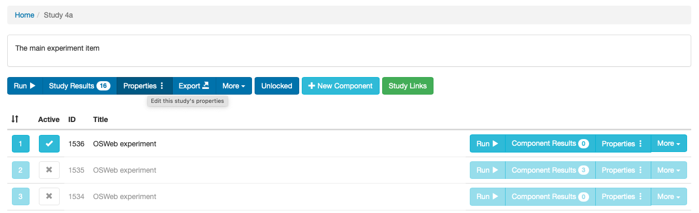
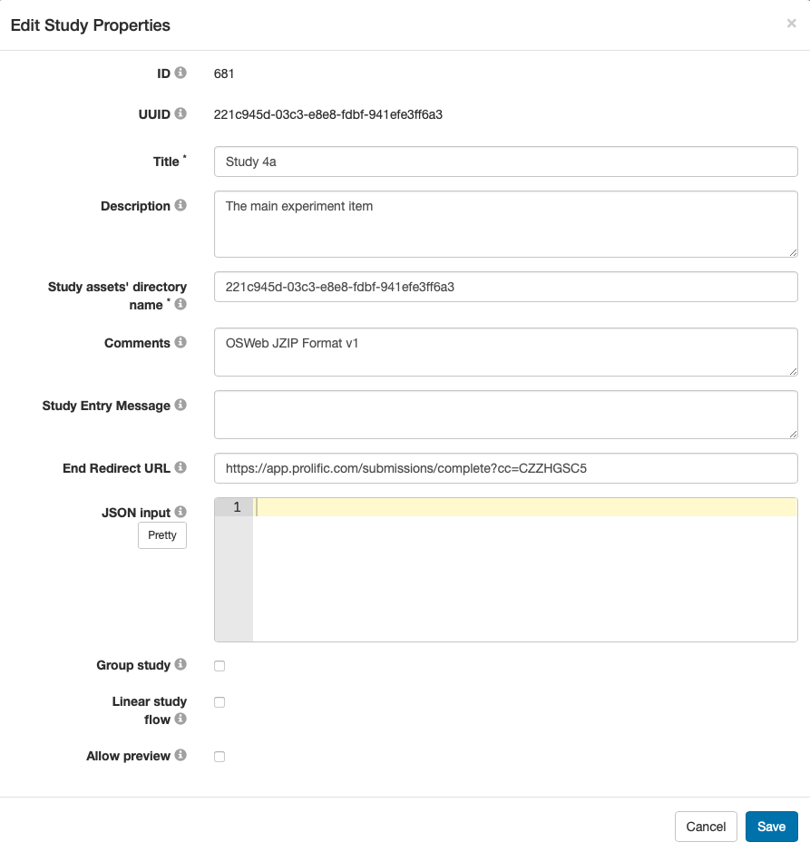
- Boutons Properties > End Redirect URL.
- Les URL sont toujours construites de la même manière : https://app.prolific.com/submissions/complete?cc= suivi du code de complétion de l’étude.
- Par exemple, pour l’URL de redirection https://app.prolific.com/submissions/complete?cc=CZZHGSC5 :
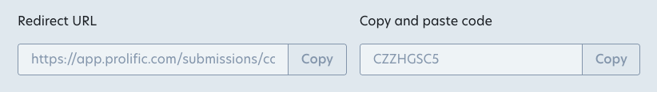
- Par exemple, pour l’URL de redirection https://app.prolific.com/submissions/complete?cc=CZZHGSC5 :
4. Valider et exporter les données
a) Prolific
Validation des participations
- Selon l’option de validation choisie (voir section 3. b) à ce propos), la participation des personnes devra être validée de manière plus ou moins manuelle.
- Même avec une redirection automatique, comme mentionné précédemment, il arrive que celle-ci ne fonctionne pas toujours et nécessite une validation manuelle (généralement, les personnes concernées envoient un message et leur identifiant permet de retrouver leur participation).
- Il est possible de sélectionner plusieurs participant·es en même temps pour valider les participations en masse, bien que quelques bugs subsistent, même sur des navigateurs autres que Safari. Par exemple, Prolific peut échouer à valider un trop grand nombre de participations d’un coup, ou certaines participations validées peuvent rester affichées comme "en attente". Dans ce cas, recharger la page suffit généralement à résoudre le problème.
- Nombre de participations :
- Prolific met en pause l’étude dès que le nombre requis de participations est atteint. Tant que les participations ne sont pas validées (ou rejetées), l’étude ne pourra pas reprendre. Il est donc important de vérifier régulièrement, surtout si certaines participations doivent être rejetées (par exemple, pour des réponses trop rapides, trop lentes ou une absence de données).
- En plus des participations approuvées ou rejetées, un nombre significatif de participations peut également se retrouver dans les statuts suivants :
- Returned : ce statut indique généralement une action volontaire de la part de la personne participante (ex. : un problème de chargement de l’expérience, une incompatibilité avec l'appareil ou une session plus longue que le temps disponible).
- Timed-out : ce statut est attribué aux participant·es ayant dépassé le temps limite pour réaliser l’expérience.
- Peu importe leur statut sur Prolific, toutes les participations, y compris celles ne fournissant pas de données exploitables, prennent un élément/une condition sur JATOS (dans le cas d'un protocole avec conditions). Il est donc conseillé de prévoir des effectifs de conditions plus élevés que le nombre strictement nécessaire (voir section 2. a) à ce propos).
- Attention :
- Les statuts timed-out ou returned n’impactent pas négativement le compte des participant·es, contrairement aux participations rejetées. En cas de problème lié ou potentiellement lié à l’expérience, il est préférable de suggérer à la personne de retourner l’étude. Elle ne sera pas rémunérée, mais ne recevra pas d’évaluation négative.
- Si le statut d’une participation n’est pas clair, mais que la personne indique avoir terminé l’étude, il est possible d’utiliser son identifiant Prolific pour la rechercher sur JATOS.
- Attention : l’heure de début d’expérience indiquée sur Prolific est peu précise. Il faudra donc parcourir les expériences commencées dans un intervalle de quelques minutes avant et après l’heure indiquée.
b) JATOS
Validation des participations
- Pour vérifier la complétion d’un participation, il suffit de se rendre dans Study Results.
- Boutons
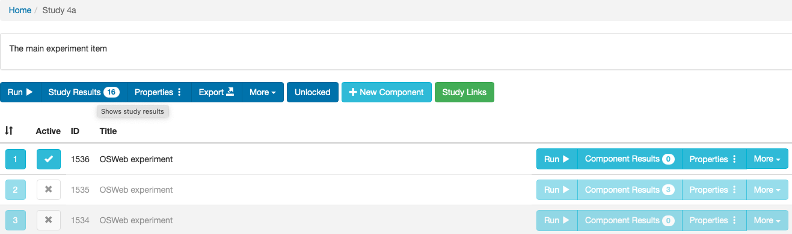
- Il faudra déplier toutes les participations commencées dans un intervalle de quelques minutes avant et après l’heure indiquée sur Prolific. Après cela, il suffit d’utiliser la fonction recherche (Ctrl + H sur Windows ou ⌘ Cmd + H sur Mac) et d’y copier l’identifiant Prolific souhaité.
- Boutons
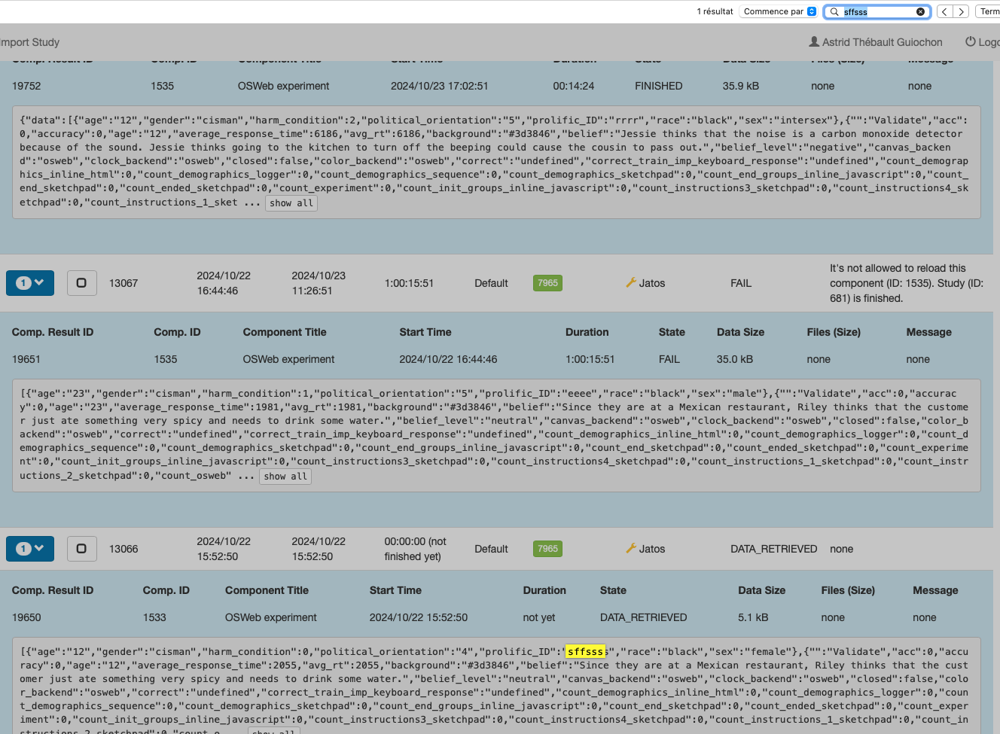
- Boutons
- Attention :
- Parfois, les fichiers de données peuvent avoir comme statut (State) comme quoi elles ont été récupérées (data_retrieved) alors qu’elles sont en réalité incomplètes, ou inversement marquées en échec (fail) mais pourtant complètes. Il est donc important de mener des tests pour estimer la taille des fichiers bruts, qui indiquent généralement le nombre total de réponses.
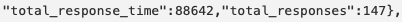
- Parfois, les fichiers de données peuvent avoir comme statut (State) comme quoi elles ont été récupérées (data_retrieved) alors qu’elles sont en réalité incomplètes, ou inversement marquées en échec (fail) mais pourtant complètes. Il est donc important de mener des tests pour estimer la taille des fichiers bruts, qui indiquent généralement le nombre total de réponses.
- Boutons
Export des données
- Comme mentionné ci-dessus, l’état des fichiers de données n’est pas toujours fiable. Pour éviter de manquer des données complètes mais avec un statut erroné, ou vice-versa, il est préférable d'utiliser un ensemble de filtres :
- Afficher les résultats de l’élément (Component Results) et non ceux de l’étude (Study Results), sinon certains filtres, comme ceux basés sur la taille du fichier, seront indisponibles.
- Boutons
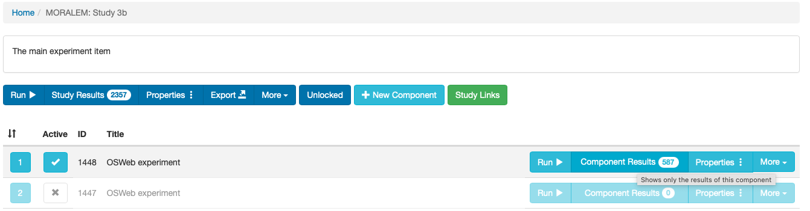
- Afficher toutes les données (Show: All).
- Afficher les informations de fichier (Customize > Files).
- Utiliser le créateur de filtre (Filter Builder).
- Fichiers non vides.
- Fichiers relativement lourds.
- Les pilotes permettent également d’avoir une idée de la taille des fichiers complets, on peut alors l’utiliser (e.g. ici ils font environ 83 ou 84 kB, on pourra spécifier Data Size > Starts With > 8).
- Boutons
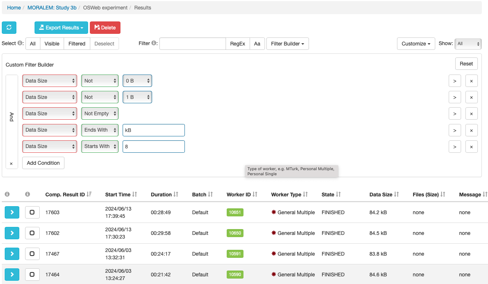
- Boutons
- Certains fichiers remplissant tous ces critères (et étant effectivement complets) n’ont pourtant pas le statut terminé (”finished”)
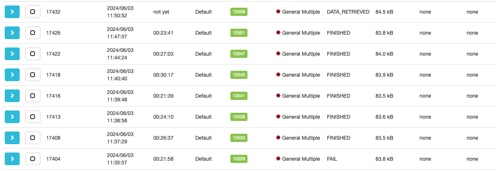
- Les pilotes permettent également d’avoir une idée de la taille des fichiers complets, on peut alors l’utiliser (e.g. ici ils font environ 83 ou 84 kB, on pourra spécifier Data Size > Starts With > 8).
- Sélectionner uniquement les fichiers correspondant aux critères (Select: Filtered).
- Boutons
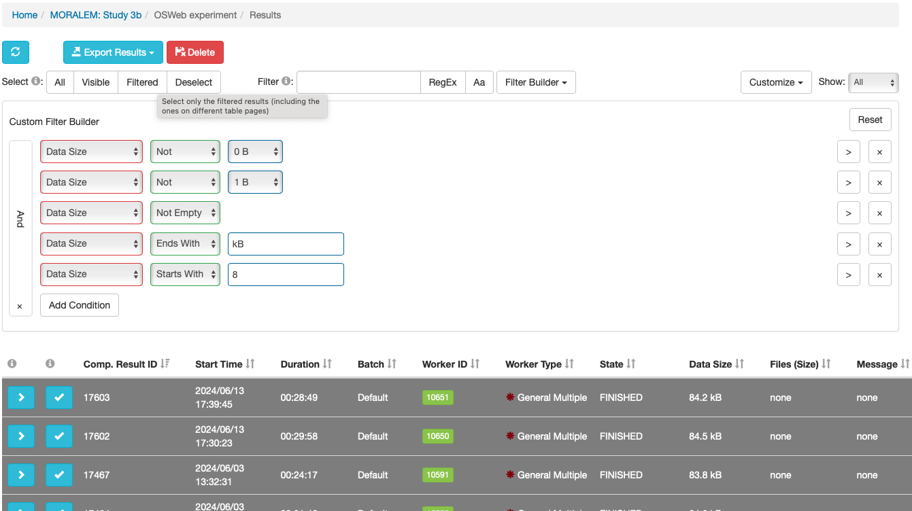
- Boutons
- Il existe plusieurs options d’export des résultats, adaptées aux différents besoins et formats (détails ici). En général, l’export des données uniquement au format texte suffit (Export Results > Data only > Plain text). Le fichier généré aura ainsi l’extension
.txt.- Boutons
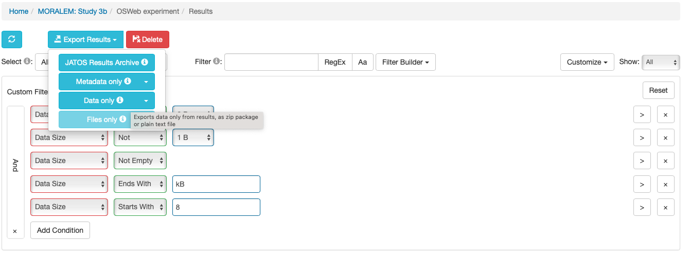
- Boutons
- NB :
- Il arrive que certaines participations ne soient pas correctement enregistrées. Dans ces cas-là le·a participant·e n’est pas redirigé·é vers Prolific, et son statut sous Prolific apparaît en “NO CODE”, mais ses données sont présentes sur JATOS.
- Le problème est que ces données sont incomplètes : bien que les informations relatives à la tâche soient enregistrées (y compris le temps total passé sur l’expérience), certaines données techniques, comme le navigateur utilisé, les propriétés de l’écran, ou encore les paramètres transmis via l’URL (tels que les identifiants Prolific et de l’étude), sont absentes. Bien qu’il soit possible d’exporter ces données depuis JATOS, OpenSesame ne semble pas capable de les convertir en tableur, ce qui entraîne une perte de ces participations.
- En attendant une solution plus adaptée, il est possible d’exporter ces données en utilisant le filtre d’état (State > Not > FINISHED), combiné aux autres critères déjà utilisés (e.g., ici les fichiers font environ 17 kB). Ensuite, on peut sélectionner uniquement les données pertinentes (Select: Filtered) pour effectuer l’exportation.
- Boutons
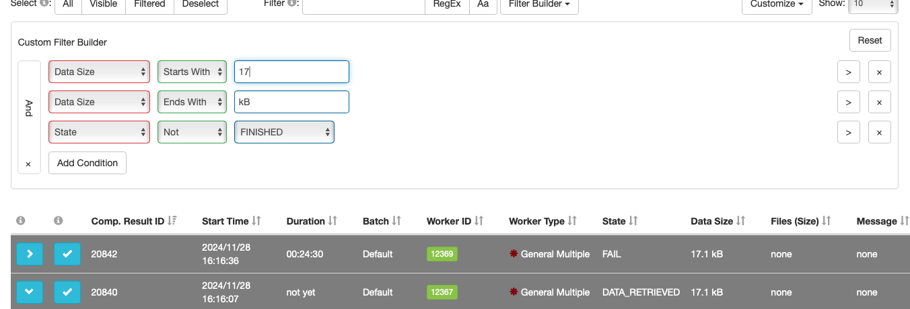
- Boutons
- On peut ensuite utiliser (et même améliorer) ce script Python. La procédure est rapide, entièrement automatisée et accompagnée de commentaires explicatifs. Il suffit d’exécuter les lignes de code successivement en suivant les instructions des commentaires. Ce script génère un fichier directement exploitable par OpenSesame.
- À noter que les données non récupérées (par exemple, le navigateur utilisé, les propriétés de l’écran ou encore les paramètres transmis via l’URL, tels que les identifiants Prolific et de l’étude) sont définitivement perdues. Le script les remplace par des valeurs par défaut, généralement des 0 ou des libellés tels que “dummy data do not use”.
- Afficher les résultats de l’élément (Component Results) et non ceux de l’étude (Study Results), sinon certains filtres, comme ceux basés sur la taille du fichier, seront indisponibles.
c) OpenSesame
Transformation des données
- Pour convertir les données en un fichier exploitable (i.e. en
.csvou.xlsxpour les Rphobes), il suffit d’utiliser la fonctionnalité prévue à cet effet dans OpenSesame.- Pour ce faire, il est nécessaire de retourner dans le panneau permettant d’exporter l’expérience vers JATOS et d’utiliser le bouton de conversion de fichier (Outils > Panneau de contrôle OSWeb et JATOS > Convertir les résultats OSWeb en .csv/ .xlsx).
- Il sera alors possible d’enregistrer le fichier dans l’un des deux formats, à l’emplacement désiré.